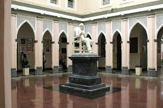

Quiénes somos
Somos un grupo de profesionales dedicados a trabajar en diferentes instituciones hospitalarias públicas y privadas con el único propósito de resolver casos que le competan la Radiología Intervencionista.
Dr. Victoriano Cabello y la Unidad de Terapia Endovascular del Hospital Vargas de Caracas
Dr. Victoriano Cabello junto con su equipo de profesionales viene realizando procedimientos Vasculares, Diagnósticos (1989) y Terapeúticos Periféricos (1994) en el Servicio de Radiología con un equipo telecomandado y en la Unidad de Hemodinamia se comenzaron a realizar Tratamientos Cerebrales (2001). Para el año 2003 el Dr. Cabello logra organizar y abrir la Unidad de Terapia Endovascular en el Servicio de Radiología del Hospital Vargas de Caracas utilizando técnicas modernas como son: Estudios en 3D, Road Mapping y Digitalización de Imágenes. En Febrero del 2004 realizó junto con equipo de trabajo la primera colocación de Stent Cerebral en Aneurima con cuello ancho. En Junio del 2005 se realizaron procedimientos donde se aplicaron los últimos avances tecnológicos Remodeling en Aneurismas y Onyx en Malformaciones Arterio Venosa Cerebral en casos de difícil acceso vascular. En esta Unidad se realizan procedimientos de Intervencionismo Vasculares tanto de diagnósticos como terapéuticos. A pacientes que recibimos referidos de los diferentes servicios del hospital, de otros hospitales de la región y de todo el país.
Agradecimientos
FUNDACIÓN URI Agradece a OCENTES SUMINISTROS C.A.
por la iniciativa de organizar y llevar a cabo los diferentes TALLERES Y LABORATORIO ANIMAL en beneficio de todos los profesionales de la salud APLAUDIMOS ESTA INICIATIVA
DR. VICTORIANO CABELLO Presidente de ASOVENER Agradece a MICRUS ENDOVASCULAR CORPORATION
por MICRUS WEEK Y LABORATORIO ANIMAL realizado en Venezuela del 20 al 23 de Abril de 2010 brindando la oportunidad de hacer Laboratorios Animal a Médicos Intervencionista en formación Colaboración: Dr. Jaime Moscoso - Elaboración de Modelos de Aneurismas en Cerdos Facilitadores: Dr. Jaime Moscoso, Dr. Bernardo Lander, Dra. Matilde Morillo, Dr. Victoriano Cabello
FUNDACIÓN URI Agradece a OCENTES SUMINISTROS C.A.
Gracias a la ayuda de las Trabajadoras Sociales de la Fundación Empresas Polar y el Hospital Vargas de Caracas que orientan a los pacientes con necesidad de Estudios Angiográficos y Procedimientos Terapeúticos: Cerebral, Renal y Miembros los cuales se realizan tanto en el Hospital como en la Clínica Santa Sofía a través de la Fundación URI Gracias por su colaboración